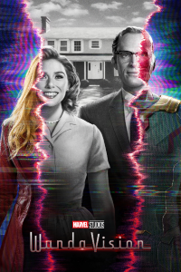
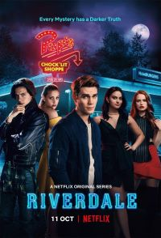
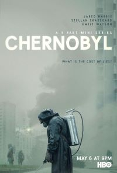
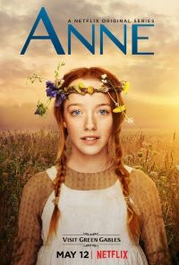

.png)
WandaVision
| Estreno | 15 de enero de 2021 | Temporadas | 1 |
| Episodios | 9 |
| Duración | 29–46 minutos |
| Protagonistas | Elizabeth Olsen, Paul Bettany, Kathryn Hahn, Teyonah Parris, Kat Dennings, Randall Park, Debra Jo Rupp, Evan Peters |
| Productor(es) | Chuck Hayward |
| Información obtenida de | https://es.wikipedia.org/wiki/Wikipedia:Portada |
Sinopsis:
Después que “Avengers: Endgame” nos presentará por primera vez los viajes en el tiempo a través del MCU, es así como Visión y la Bruja Escarlata llegan a la década de 1950, donde estará situada esta historia. Durante los seis episodios de la primera temporada, conoceremos más sobre la relación entre estos dos personajes, y descubriremos que sucedió con Visión después de ser asesinado por Thanos. Actualmente, Marvel Studios se encuentra desarrollando esta serie junto a Jac Schaeffer, como showrunner; contando con la participación de Paul Bettany y Elizabeth Olsen para volver a interpretar sus papeles de la gran pantalla.
Información obtenida de:SENSACINE
Riverdale
| Estreno | 26 de enero de 2017 | Temporadas | 5 |
| Episodios | 86 |
| Duración | 42-44 minutos |
| Protagonistas | KJ Apa, Lili Reinhart, Camila Mendes, Cole Sprouse, Marisol Nichols, Madelaine Petsch, Ashleigh Murray, Mädchen Amick, Luke Perry, Mark Consuelos, Casey Cott, Skeet Ulrich, Charles Melton, Vanessa Morgan, Drew Ray Tanner, Erinn Westbrook |
| Productor(es) | J.B. Moranville |
| Información obtenida de | https://es.wikipedia.org/wiki/Wikipedia:Portada |
Sinopsis:
Al mismo tiempo que un nuevo año escolar da comienzo, la ciudad de Riverdale aún está reponiéndose de la trágica muerte reciente de Jason Blossom. Los acontecimientos que han tenido lugar durante el verano han hecho que Archie Andrews se dé cuenta de que quiere seguir una carrera musical y no seguir los pasos de su padre. Asimismo, a Archie aún le pesa haber roto su amistad con Jughead Jones.
Mientras tanto, Betty Cooper está ansiosa de ver a Archie, de quien está enamorada, después de haber estado fuera durante el verano, sin embargo, aún no está lista para revelarle sus verdaderos sentimientos. Cuando una nueva estudiante, Veronica Lodge, llega a Riverdale desde Nueva York junto a su madre, nace la chispa entre ella y Archie. Pero Veronica no quiere poner su nueva amistad con Betty en riesgo.
Cheryl Blossom, la chica más popular de Riverdale, es feliz removiento las situaciones alrededor de Archie, Betty y Veronica para causar problemas. Pero Cheryl es una chica que guarda muchos secretos. Específicamente sobre la muerte de su hermano gemelo, Jason. Ambientada en el presente y basada en los icónicos personajes de Archie Comics, Riverdale ofrece una sorprendente y subversiva mirada de Archie, Betty, Verónica y el resto de los habitantes de esta pequeña y surrealista ciudad.
Información obtenida de:SENSACINE
Chernobyl
| Estreno | 6 mayo de 2019 | Temporadas | 1 |
| Episodios | 5 |
| Duración | 60–72 minutos |
| Protagonistas | Jared Harris Stellan Skarsgård Emily Watson |
| Productor(es) | David Declerque |
| Información obtenida de | https://es.wikipedia.org/wiki/Wikipedia:Portada |
Sinopsis:
El 26 de abril de 1986, una de las peores catástrofes humanas se cierne sobre la faz de la tierra. La planta nuclear de Chernobyl, que por aquel entonces pertenecía a la República Socialista Soviética de Ucrania, explota causando uno de los mayores desastres medioambientales de la historia, debido al sobrecalentamiento del núcleo del reactor nuclear.
Esta serie se centra en los hombres y mujeres que sacrificaron sus vidas para salvar al resto de Europa de unas consecuencias aún mayores de las sufridas. Además, gira en torno a la figura de Boris Shcherbina, vicepresidente del Consejo de Ministros y jefe de la Oficina de Combustibles y Energía de la URSS, a quien le asignan la tarea de dirigir la comisión del gobierno de Chernobyl durante las primeras horas del accidente, antes de conocerse todos los datos y de las graves consecuencias ocasionadas.
Pronto, Shcherbina se encuentra atascado en un sistema político y burocrático que deja mucho que desear frente a las pérdidas humanas ocasionadas.
Información obtenida de:SENSACINE
Anne with an E
| Estreno | 19 de marzo de 2017 | Temporadas | 3 |
| Episodios | 27 |
| Duración | 89 minutos (piloto), 46-44 minutos |
| Protagonistas | Amy Beth McNulty, Geraldine James, Dalila Bela, Lucas Jade Zumann, Aymeric Jett Montaz, R. H. Thomson, Corrine Koslo, Dalmar Abuzeid, Cory Grüter-Andrew, Joanna Douglas |
| Productor(es) | Susan Murdoch, John Calvert |
| Información obtenida de | https://es.wikipedia.org/wiki/Wikipedia:Portada |
Sinopsis:
Anne Shirley es una niña huérfana que vive en un pequeño pueblo llamado Avonlea que pertenece a la Isla del Príncipe Eduardo, en el año 1890. Después de una infancia difícil, donde fue pasando de orfanato a hogares de acogida, es enviada por error a vivir con una solterona y su hermano. Cuando cumple 13 años, Anne va a conseguir transformar su vida y el pequeño pueblo donde vive gracias a su fuerte personalidad, intelecto e imaginación.
Información obtenida de:SENSACINE
The Good Doctor

| Estreno | 25 de septiembre de 2017 | Temporadas | 4 |
| Episodios | 73 |
| Duración | 41–43 minutos |
| Protagonistas | Freddie Highmore, Antonia Thomas, Nicholas Gonzalez, Chuku Modu, Beau Garrett, Hill Harper, Richard Schiff, Tamlyn Tomita, Will Yun Lee, Fiona Gubelmann, Christina Chang, Paige Spara |
| Productor(es) | David Shore, Daniel Dae Kim, David Kim, Sebastian Lee, Seth Gordon |
| Información obtenida de | https://es.wikipedia.org/wiki/Wikipedia:Portada |
Sinopsis:
The Good Doctor se centra en un joven y brillante cirujano que padece el síndrome de Savant. Poco se sabe de este "síndrome del sabio" además de que aquellos que lo sufren tienen una memoria prodigiosa y muy especial. Shaun, no tuvo una infancia fácil, para convertirse en un médico con talento primero debía enfrentarse a los problemas.
El San José St. Bonaventure Hospital, un hospital de prestigio, no duda en reclutar a este médico en la unidad de cirugía pediátrica. El Dr. Ira Glassman es el culpable de su contratación, pues es su mentor y amigo, y tiene una especial pasión por él.
Sin embargo, el joven no tiene ningún tipo de aptitud social y es incapaz de relacionarse con los demás. Ante esta situación surge la siguiente premisa: ¿Puede una persona que no tiene la capacidad para relacionarse con la gente realmente salvar sus vidas? Shaun tendrá que enfretarse así a los prejuicios de sus compañeros de trabajo debido a su síndrome mientras intenta salvar vidas.
Información obtenida de:SENSACINE